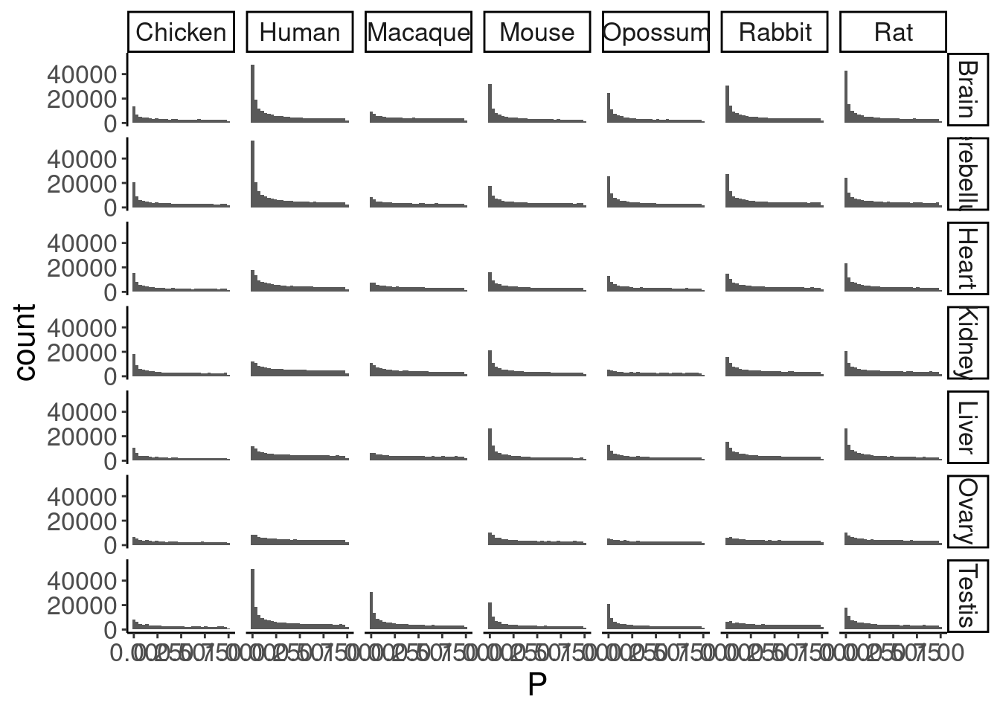
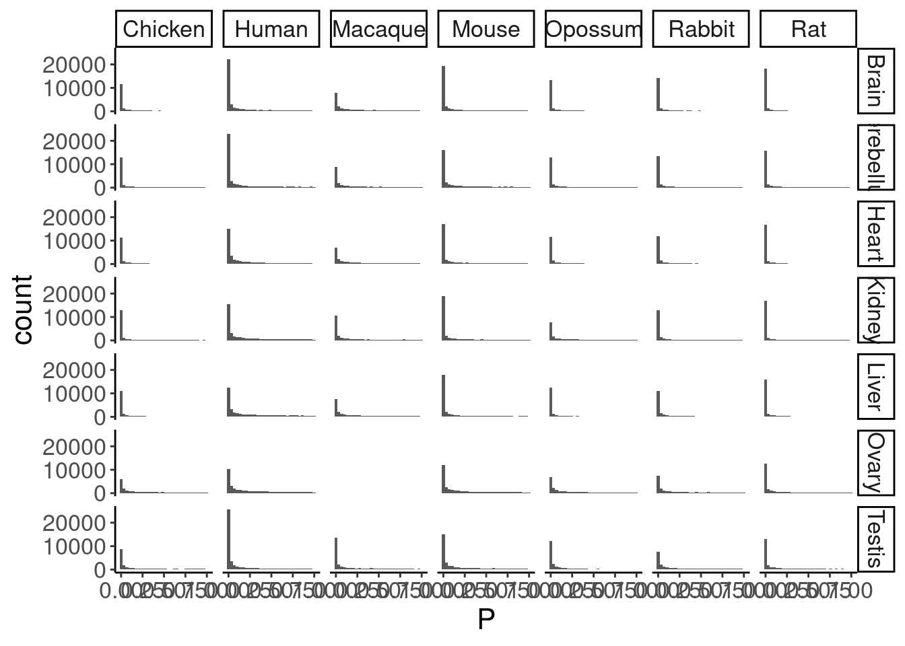
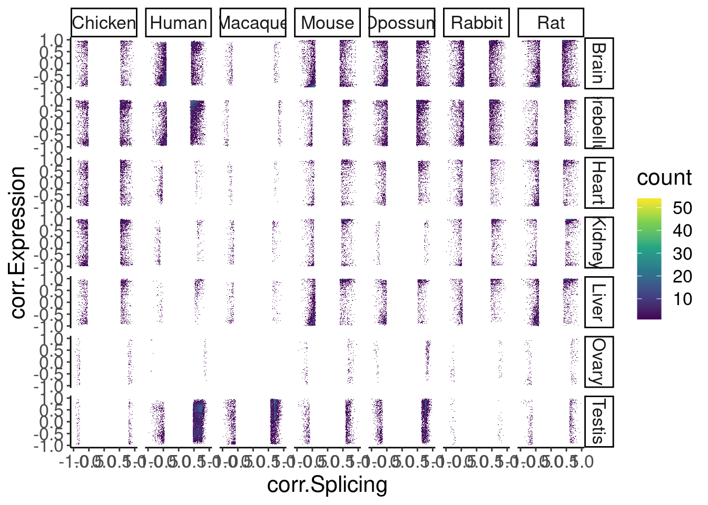
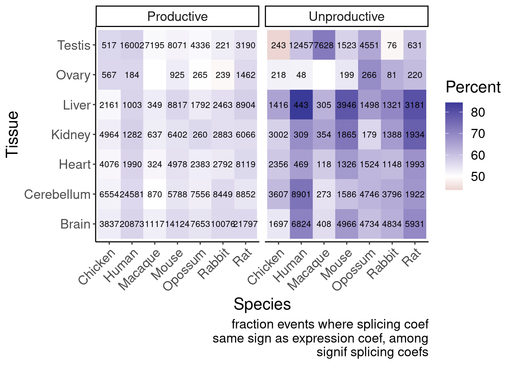
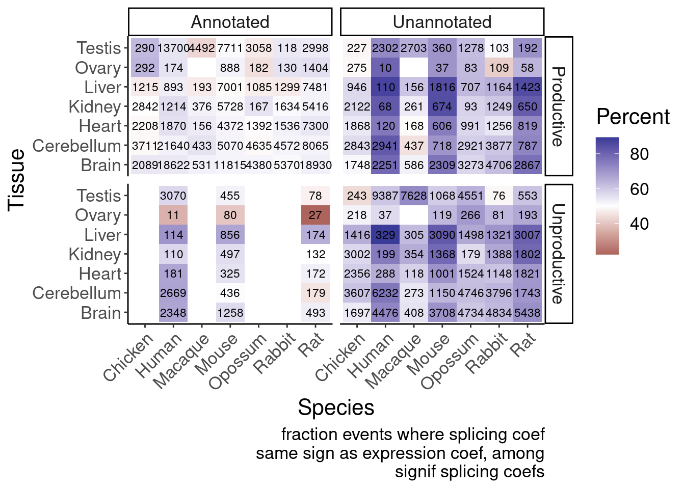
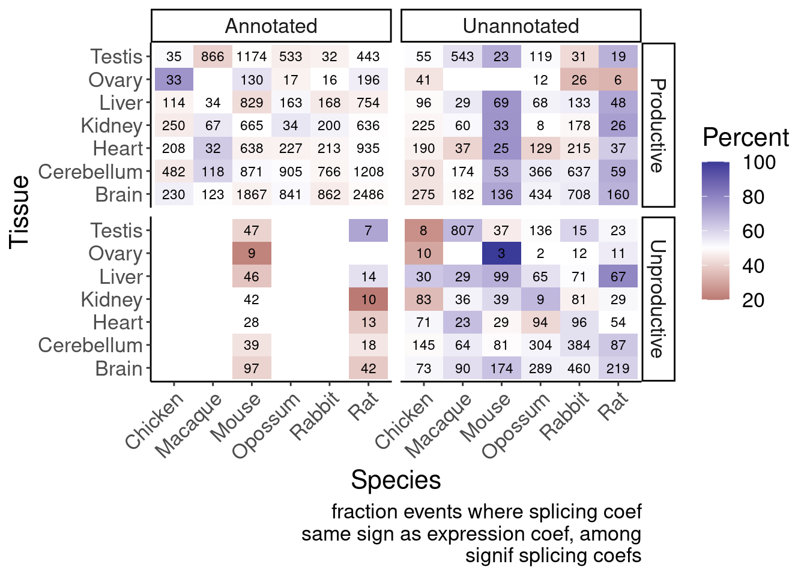
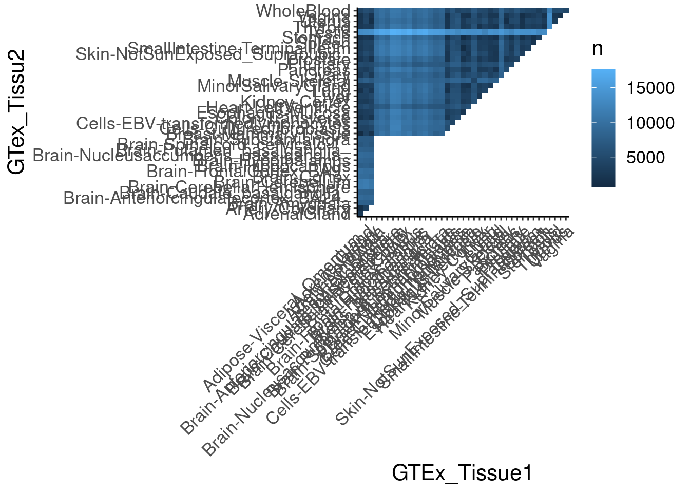
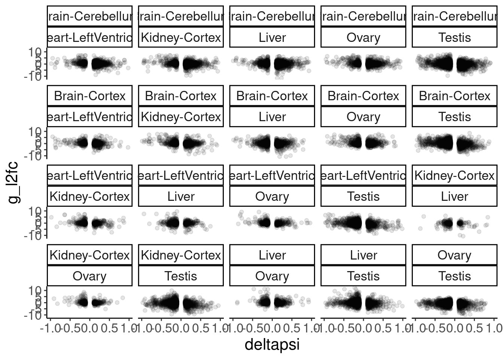

Last updated: 2024-09-09
Checks: 6 1
Knit directory:
2024_comparativesplicing/analysis/
This reproducible R Markdown analysis was created with workflowr (version 1.7.0). The Checks tab describes the reproducibility checks that were applied when the results were created. The Past versions tab lists the development history.
The R Markdown is untracked by Git. To know which version of the R
Markdown file created these results, you’ll want to first commit it to
the Git repo. If you’re still working on the analysis, you can ignore
this warning. When you’re finished, you can run
wflow_publish to commit the R Markdown file and build the
HTML.
Great job! The global environment was empty. Objects defined in the global environment can affect the analysis in your R Markdown file in unknown ways. For reproduciblity it’s best to always run the code in an empty environment.
The command set.seed(19900924) was run prior to running
the code in the R Markdown file. Setting a seed ensures that any results
that rely on randomness, e.g. subsampling or permutations, are
reproducible.
Great job! Recording the operating system, R version, and package versions is critical for reproducibility.
Nice! There were no cached chunks for this analysis, so you can be confident that you successfully produced the results during this run.
Great job! Using relative paths to the files within your workflowr project makes it easier to run your code on other machines.
Great! You are using Git for version control. Tracking code development and connecting the code version to the results is critical for reproducibility.
The results in this page were generated with repository version 172f74b. See the Past versions tab to see a history of the changes made to the R Markdown and HTML files.
Note that you need to be careful to ensure that all relevant files for
the analysis have been committed to Git prior to generating the results
(you can use wflow_publish or
wflow_git_commit). workflowr only checks the R Markdown
file, but you know if there are other scripts or data files that it
depends on. Below is the status of the Git repository when the results
were generated:
Ignored files:
Ignored: .Rhistory
Ignored: .Rproj.user/
Ignored: analysis/figure/
Ignored: code/.RData
Ignored: code/.Rhistory
Ignored: code/.ipynb_checkpoints/
Ignored: code/.snakemake/
Ignored: code/ChainFiles/
Ignored: code/Chicken.fixed2.agat.log
Ignored: code/Chicken.head.agat.log
Ignored: code/CordosoMoreira_Fastq/
Ignored: code/Downloads/
Ignored: code/GenomeFiles/
Ignored: code/LiftoverJuncs/
Ignored: code/Log.out
Ignored: code/MazinLeafcutterAnalysis/
Ignored: code/Reference.basic.agat.log
Ignored: code/Rplots.pdf
Ignored: code/Session.vim
Ignored: code/config/OldConfigs/2040822_Cordoso_Moreira_SampleList.tsv
Ignored: code/conservation/
Ignored: code/featureCounts/
Ignored: code/kaessmanAnalysis/
Ignored: code/kaessman_AS_dat/
Ignored: code/logs/
Ignored: code/rna-seq/
Ignored: code/rules/.MazinLeafcutterAnalysis.smk.swp
Ignored: code/scratch/
Ignored: code/scripts/.ipynb_checkpoints/
Ignored: code/scripts/.vscode/
Ignored: code/snakemake.log
Ignored: data/.DS_Store
Untracked files:
Untracked: analysis/.ipynb_checkpoints/
Untracked: analysis/2024-08-21_SpearmanFromPSI_WithinSpecies.Rmd
Untracked: analysis/2024-08-21_SpearmanFromPSI_WithinSpecies_AllSpecies.Rmd
Untracked: analysis/2024-08-21_SpearmanFromPSI_WithinSpecies_SampleStagesFixed.Rmd
Untracked: analysis/2024-08-24_BioMartLookupGenes.Rmd
Untracked: analysis/2024-08-29_ExploreJuncLiftovers.Rmd
Untracked: analysis/2024-08-29_OrganizeCrossSpeciesTables.Rmd
Untracked: analysis/2024-09-06_UnrpdoctuviveSplicingAndExpression.Rmd
Untracked: analysis/20240815_LiftoverJuncsTest.ipynb
Untracked: analysis/Untitled.ipynb
Untracked: code/envs/crossmap.yml
Untracked: code/rules/MazinLeafcutterAnalysis.smk
Untracked: code/scripts/FeatureCounts_to_Mat.R
Untracked: code/scripts/PrepAllJuncsFor_JunctionClassifier.R
Untracked: code/scripts/Reformat_gtf.py
Untracked: code/scripts/SpearmanCor_Mazin_LeafcutterPSI.R
Untracked: code/scripts/SpearmanCor_Mazin_log2RPKM.R
Untracked: code/scripts/Untitled.ipynb
Untracked: data/Stages_AsIn_CordosoMoreira.tsv
Untracked: data/Stages_AsIn_CordosoMoreira_Recoded.txt
Untracked: output/Conserved.devAS.leafcutter.tsv.gz
Untracked: output/Ensembl.GeneHumanHomologs.tsv.gz
Untracked: output/Ensembl.TranscriptInfo.tsv.gz
Unstaged changes:
Modified: analysis/2024-07-16_Download_CordosoMoreira_Fastq.Rmd
Modified: analysis/index.Rmd
Modified: code/Snakefile
Modified: code/config/ChainFiles.tsv
Modified: code/config/Cordoso_Moreira_SampleList.tsv
Modified: code/config/STAR_Genome_List.tsv
Modified: code/config/samples.tsv
Modified: code/envs/bedparse.yml
Modified: code/module_workflows/snakemake-workflow_rna-seq
Modified: code/rules/LiftoverJuncs.smk
Modified: code/rules/common.smk
Modified: code/scripts/leafcutter2
Modified: output/QC/ReadCountsPerSamples.tsv
Note that any generated files, e.g. HTML, png, CSS, etc., are not included in this status report because it is ok for generated content to have uncommitted changes.
There are no past versions. Publish this analysis with
wflow_publish() to start tracking its development.
I previously showed from a reanalysis of Mazin’s splicing quantifications that there is the expected correlation between unproductive splicing and expression. I have reprocessed things purely with leafcutter2 approach for splicing, from raw data, and now I want to repeat finding those trends, both both species-specific, and conserved devAS juncs.
library(tidyverse)
library(data.table)
# Set theme
theme_set(
theme_classic() +
theme(text=element_text(size=16, family="Helvetica")))
# I use layer a lot, to rotate long x-axis labels
Rotate_x_labels <- theme(axis.text.x = element_text(angle = 45, vjust = 1, hjust=1))Get devAS juncs, genes, and productivity classifications…
JunctionProductivity <- JuncAnnotations <- Sys.glob("../code/MazinLeafcutterAnalysis/ClassifyJuncs/*.AllObserved._junction_classifications.txt") %>%
setNames(str_replace(., "../code/MazinLeafcutterAnalysis/ClassifyJuncs/(.+?).AllObserved._junction_classifications.txt", "\\1")) %>%
lapply(fread) %>%
bind_rows(.id="Species") %>%
mutate(Species.short = str_replace(Species, "^(.+?)_.+", "\\1"))Because of a bug in the classify juncs script at time these files were made, I have to fix the junc coordiantes to propoerly join…
# JunctionProductivity.fixed <- JunctionProductivity %>%
# # head() %>%
# separate(Intron_coord, into=c("chrom", "start", "stop"), sep='[-:]', convert=T) %>%
# mutate(Intron_coord = case_when(
# Annot ~ str_glue("{chrom}:{start}-{stop-1}"),
# TRUE ~ str_glue("{chrom}:{start}-{stop}")
# )) %>%
# dplyr::select(-chrom, -start, -stop)
Spearman.tests <- Sys.glob("../code/MazinLeafcutterAnalysis/SplicingSpearmanCoefs/*.tsv.gz") %>%
setNames(str_replace(., "../code/MazinLeafcutterAnalysis/SplicingSpearmanCoefs/(.+?).tsv.gz", "\\1")) %>%
lapply(fread) %>%
bind_rows(.id="OriginGenome") %>%
dplyr::rename(chrom=start, start=stop, stop=chrom) %>%
mutate(Intron_coord = str_glue("{chrom}:{start}-{stop}"))
Spearman.tests.expression <- Sys.glob("../code/MazinLeafcutterAnalysis/ExpressionSpearmanCoefs/*.tsv.gz") %>%
setNames(str_replace(., "../code/MazinLeafcutterAnalysis/ExpressionSpearmanCoefs/(.+?).tsv.gz", "\\1")) %>%
lapply(fread) %>%
bind_rows(.id="OriginGenome")Before we join tables, let’s quickly eyeball p val distribution for spearman tests
Spearman.tests %>%
ggplot(aes(x=P)) +
geom_histogram() +
facet_grid(Tissue~Species)
Spearman.tests.expression %>%
ggplot(aes(x=P)) +
geom_histogram() +
facet_grid(Tissue~Species)
Ok, good enough I suppose.
Spearman.tests.WithProductivity <- Spearman.tests %>%
inner_join(
JunctionProductivity,
by=c("OriginGenome"="Species", "Intron_coord")
) %>%
inner_join(
Spearman.tests.expression,
by=c("Tissue", "OriginGenome", "Gene_name"="Geneid", "Species"),
suffix=c(".Splicing", ".Expression")
)
Spearman.tests.WithProductivity %>%
count(Species) Species n
1: Chicken 662622
2: Human 1217574
3: Macaque 763165
4: Mouse 927183
5: Opossum 753417
6: Rabbit 959977
7: Rat 1058386Spearman.tests.WithProductivity %>%
filter(q.Splicing < 0.01 & !Coding) %>%
ggplot(aes(x=corr.Splicing, y=corr.Expression)) +
geom_hex(bins=100) +
scale_fill_viridis_c() +
facet_grid(Tissue~Species)
Spearman.tests.WithProductivity %>%
mutate(Coding = if_else(Coding, "Productive", "Unproductive")) %>%
filter(q.Splicing < 0.01) %>%
mutate(SplicingAndExpresionCoefSameSign = sign(corr.Splicing)==sign(corr.Expression)) %>%
count(Tissue, Species, Coding, SplicingAndExpresionCoefSameSign) %>%
filter(!is.na(SplicingAndExpresionCoefSameSign)) %>%
group_by(Tissue, Species, Coding) %>%
mutate(N = sum(n)) %>%
ungroup() %>%
mutate(Percent = n/N*100) %>%
filter(SplicingAndExpresionCoefSameSign) %>%
ggplot(aes(x=Species, y=Tissue, fill=Percent)) +
geom_raster() +
scale_fill_gradient2(midpoint=50) +
geom_text(aes(label=N), size=3) +
facet_wrap(~Coding) +
Rotate_x_labels +
labs(caption=str_wrap("fraction events where splicing coef same sign as expression coef, among signif splicing coefs", 35)) Ok, that makes sense, let’s also look at annotated vs unannotated
Spearman.tests.WithProductivity %>%
mutate(Coding = if_else(Coding, "Productive", "Unproductive")) %>%
mutate(Annot = if_else(Annot, "Annotated", "Unannotated")) %>%
filter(q.Splicing < 0.01) %>%
mutate(SplicingAndExpresionCoefSameSign = sign(corr.Splicing)==sign(corr.Expression)) %>%
count(Tissue, Species, Coding, Annot, SplicingAndExpresionCoefSameSign) %>%
filter(!is.na(SplicingAndExpresionCoefSameSign)) %>%
group_by(Tissue, Species, Coding, Annot) %>%
mutate(N = sum(n)) %>%
ungroup() %>%
mutate(Percent = n/N*100) %>%
filter(SplicingAndExpresionCoefSameSign) %>%
ggplot(aes(x=Species, y=Tissue, fill=Percent)) +
geom_tile() +
scale_fill_gradient2(midpoint=50) +
geom_text(aes(label=N), size=3) +
facet_grid(Coding~Annot) +
Rotate_x_labels +
labs(caption=str_wrap("fraction events where splicing coef same sign as expression coef, among signif splicing coefs", 35))
Spearman.tests.WithProductivity %>%
filter(Annot) OriginGenome junc chrom
1: Chicken_UCSC.galGal6_ensv101 chr1:100003234:100004243:clu_5391_+ chr1
2: Chicken_UCSC.galGal6_ensv101 chr1:100003234:100004243:clu_5391_+ chr1
3: Chicken_UCSC.galGal6_ensv101 chr1:100003234:100004243:clu_5391_+ chr1
4: Chicken_UCSC.galGal6_ensv101 chr1:100003234:100004243:clu_5391_+ chr1
5: Chicken_UCSC.galGal6_ensv101 chr1:100003234:100004243:clu_5391_+ chr1
---
3803580: Rat_UCSC.rn7_RefSeqv108 chrY:991425:993904:clu_67064_- chrY
3803581: Rat_UCSC.rn7_RefSeqv108 chrY:991425:993904:clu_67064_- chrY
3803582: Rat_UCSC.rn7_RefSeqv108 chrY:991425:993904:clu_67064_- chrY
3803583: Rat_UCSC.rn7_RefSeqv108 chrY:991425:993904:clu_67064_- chrY
3803584: Rat_UCSC.rn7_RefSeqv108 chrY:991425:993904:clu_67064_- chrY
start stop cluster Species Tissue corr.Splicing
1: 100003234 100004243 clu_5391_+ Chicken Brain -0.03987895
2: 100003234 100004243 clu_5391_+ Chicken Cerebellum 0.28296971
3: 100003234 100004243 clu_5391_+ Chicken Heart 0.19501447
4: 100003234 100004243 clu_5391_+ Chicken Kidney -0.23077558
5: 100003234 100004243 clu_5391_+ Chicken Liver -0.10532238
---
3803580: 991425 993904 clu_67064_- Rat Cerebellum 0.15363175
3803581: 991425 993904 clu_67064_- Rat Heart 0.06666267
3803582: 991425 993904 clu_67064_- Rat Kidney 0.33500013
3803583: 991425 993904 clu_67064_- Rat Liver 0.10714348
3803584: 991425 993904 clu_67064_- Rat Testis -0.07451586
P.Splicing q.Splicing Intron_coord Gene_name
1: 0.81737614 0.6991948 chr1:100003234-100004243 ENSGALG00000015693.6
2: 0.09447022 0.2081755 chr1:100003234-100004243 ENSGALG00000015693.6
3: 0.24741161 0.3598447 chr1:100003234-100004243 ENSGALG00000015693.6
4: 0.18227279 0.2912324 chr1:100003234-100004243 ENSGALG00000015693.6
5: 0.54097689 0.5657965 chr1:100003234-100004243 ENSGALG00000015693.6
---
3803580: 0.47353920 0.4928485 chrY:991425-993904 Uty
3803581: 0.71697743 0.5473096 chrY:991425-993904 Uty
3803582: 0.10955857 0.2716403 chrY:991425-993904 Uty
3803583: 0.57306776 0.4302994 chrY:991425-993904 Uty
3803584: 0.70085706 0.5964342 chrY:991425-993904 Uty
Annot Coding UTR Species.short corr.Expression P.Expression
1: TRUE TRUE FALSE Chicken 0.9046690 3.782586e-14
2: TRUE TRUE FALSE Chicken 0.9403396 1.732790e-17
3: TRUE TRUE FALSE Chicken 0.4043716 1.305315e-02
4: TRUE TRUE FALSE Chicken 0.6051106 1.177121e-04
5: TRUE TRUE FALSE Chicken 0.4038903 1.456961e-02
---
3803580: TRUE TRUE FALSE Rat 0.1671667 2.315355e-01
3803581: TRUE TRUE FALSE Rat -0.1509034 2.301778e-01
3803582: TRUE TRUE FALSE Rat -0.1508297 3.061648e-01
3803583: TRUE TRUE FALSE Rat -0.1720357 1.887202e-01
3803584: TRUE TRUE FALSE Rat -0.2652109 1.566564e-01
q.Expression
1: 2.098834e-13
2: 2.692289e-16
3: 5.623650e-03
4: 5.213676e-05
5: 5.978063e-03
---
3803580: 6.724892e-02
3803581: 4.612255e-02
3803582: 5.840534e-02
3803583: 4.332171e-02
3803584: 6.626084e-02Hm, maybe this classifier is overly classifying things as productive, when in actuality most of those unannotated juncs that are classified as productive are unproductive… Maybe I would get more sensible results if I just subset the events with a reasonably high delta PSI, since the juncs that actually effect gene expression would probably only be the ones with a large delta PSI.
Maybe we can start by just using one representative junc per cluster for conserved events…
Conserved.dev.AS <- read_tsv("../output/Conserved.devAS.leafcutter.tsv.gz")
Spearman.tests.WithProductivity %>%
filter(q.Splicing < 0.01) %>%
inner_join(Conserved.dev.AS %>%
filter(IsRepresentativeJuncForCluster) %>%
dplyr::select(junc, OriginGenome) %>%
distinct()) %>%
mutate(Coding = if_else(Coding, "Productive", "Unproductive")) %>%
mutate(Annot = if_else(Annot, "Annotated", "Unannotated")) %>%
mutate(SplicingAndExpresionCoefSameSign = sign(corr.Splicing)==sign(corr.Expression)) %>%
count(Tissue, Species, Coding, Annot, SplicingAndExpresionCoefSameSign) %>%
filter(!is.na(SplicingAndExpresionCoefSameSign)) %>%
group_by(Tissue, Species, Coding, Annot) %>%
mutate(N = sum(n)) %>%
ungroup() %>%
mutate(Percent = n/N*100) %>%
filter(SplicingAndExpresionCoefSameSign) %>%
ggplot(aes(x=Species, y=Tissue, fill=Percent)) +
geom_tile() +
scale_fill_gradient2(midpoint=50) +
geom_text(aes(label=N), size=3) +
facet_grid(Coding~Annot) +
Rotate_x_labels +
labs(caption=str_wrap("fraction events where splicing coef same sign as expression coef, among signif splicing coefs", 35))
Some code from Chao to get GTEx differential splicing results…
get_DS_DGE_table <- function(rds, contrast, FDR = 1e-5, selection = 'all', plot=FALSE) {
# rds: a single rds file, previousp rocessed in "../../SpliFi/prepdata.smk"
# contrast: a string, the contrast name
# return a joined table (on gene_names) of differential spliced junctions and diffenetially expressed genes
data <- readRDS(rds)
ds <- data$ds
dge <- data$dge
dge_dsc <- data$dge_dsc
joined_dt <- inner_join(
x = ds[abs(deltapsi) > .1 & `p.adjust` < FDR & ctype %in% c('PR', 'PR,UP'),
.(gene_id, gene_name, intron, cluster, itype, ctype, deltapsi)],
y = dge[, .(gene_id, g_l2fc = log2FoldChange, g_z = stat, g_l2fcSE = lfcSE)],
by = 'gene_id'
)
if (selection == 'maxClu') {
joined_dt <- joined_dt[
, .(intron, deltapsi, g_l2fc, g_z, g_l2fcSE, rk = rank(-abs(deltapsi), ties.method = "random")),
by = .(gene_id, gene_name, cluster, itype, ctype)
][rk == 1, -c('rk')]
} else if (selection == 'maxGene') {
joined_dt <- joined_dt[
, .(intron, deltapsi, g_l2fc, g_z, g_l2fcSE, rk = rank(-abs(deltapsi), ties.method = "random")),
by = .(gene_id, gene_name, itype)
][rk == 1, -c('rk')]
}
return(joined_dt)
}
example.table <- get_DS_DGE_table("/project/yangili1/cdai/SpliFi/data/ds_v_dge/Adipose-Visceral_Omentum__v_Brain-Cerebellum_data.rds")Ok, now let’s get all tables…
All.Gtex.Contrasts <- Sys.glob("/project/yangili1/cdai/SpliFi/data/ds_v_dge/*_v_*.rds") %>%
setNames(str_replace(., "/project/yangili1/cdai/SpliFi/data/ds_v_dge/(.+?)_v_(.+?)_data.rds", "\\1;\\2")) %>%
lapply(get_DS_DGE_table) %>%
bind_rows(.id="Contrast") %>%
separate(intron, into=c("Hg38_chrom", "Hg38_start", "Hg38_end", "GTExAnalysisClusterName"), sep=":", convert=T, remove=F) %>%
separate(Contrast, into=c("GTEx_Tissue1", "GTex_Tissu2"), sep=";")
All.Gtex.Contrasts %>%
count(GTEx_Tissue1) GTEx_Tissue1 n
1: Adipose-Visceral_Omentum_ 206029
2: AdrenalGland 227965
3: Artery-Coronary 208459
4: Brain-Amygdala 218139
5: Brain-Anteriorcingulatecortex_BA24_ 242840
6: Brain-Caudate_basalganglia_ 222593
7: Brain-CerebellarHemisphere 276957
8: Brain-Cerebellum 271655
9: Brain-Cortex 244201
10: Brain-FrontalCortex_BA9_ 258066
11: Brain-Hippocampus 215251
12: Brain-Hypothalamus 231600
13: Brain-Nucleusaccumbens_basalganglia_ 245041
14: Brain-Putamen_basalganglia_ 218302
15: Brain-Spinalcord_cervicalc-1_ 197567
16: Brain-Substantianigra 205978
17: Breast-MammaryTissue 91769
18: Cells-Culturedfibroblasts 136013
19: Cells-EBV-transformedlymphocytes 134591
20: Colon-Transverse 74678
21: Esophagus-Mucosa 82316
22: Heart-LeftVentricle 116722
23: Kidney-Cortex 75043
24: Liver 82299
25: Lung 63626
26: MinorSalivaryGland 59686
27: Muscle-Skeletal 114774
28: Ovary 58513
29: Pancreas 49154
30: Pituitary 62238
31: Prostate 35545
32: Skin-NotSunExposed_Suprapubic_ 39706
33: SmallIntestine-TerminalIleum 32184
34: Spleen 31135
35: Stomach 25086
36: Testis 53379
37: Thyroid 10501
38: Uterus 7124
39: Vagina 4557
GTEx_Tissue1 nAll.Gtex.Contrasts %>%
count(GTex_Tissu2) GTex_Tissu2 n
1: AdrenalGland 2796
2: Artery-Coronary 4706
3: Brain-Amygdala 23593
4: Brain-Anteriorcingulatecortex_BA24_ 26878
5: Brain-Caudate_basalganglia_ 23997
6: Brain-CerebellarHemisphere 33344
7: Brain-Cerebellum 32941
8: Brain-Cortex 27614
9: Brain-FrontalCortex_BA9_ 29095
10: Brain-Hippocampus 23305
11: Brain-Hypothalamus 25381
12: Brain-Nucleusaccumbens_basalganglia_ 27242
13: Brain-Putamen_basalganglia_ 23639
14: Brain-Spinalcord_cervicalc-1_ 20687
15: Brain-Substantianigra 21623
16: Breast-MammaryTissue 134662
17: Cells-Culturedfibroblasts 145410
18: Cells-EBV-transformedlymphocytes 158222
19: Colon-Transverse 142765
20: Esophagus-Mucosa 152431
21: Heart-LeftVentricle 141554
22: Kidney-Cortex 158931
23: Liver 171865
24: Lung 171207
25: MinorSalivaryGland 173172
26: Muscle-Skeletal 216727
27: Ovary 181463
28: Pancreas 192359
29: Pituitary 194652
30: Prostate 181835
31: Skin-NotSunExposed_Suprapubic_ 222550
32: SmallIntestine-TerminalIleum 215817
33: Spleen 220514
34: Stomach 184787
35: Testis 513392
36: Thyroid 213663
37: Uterus 219316
38: Vagina 214048
39: WholeBlood 263099
GTex_Tissu2 nAll.Gtex.Contrasts %>%
count(GTEx_Tissue1, GTex_Tissu2) %>%
ggplot(aes(x=GTEx_Tissue1, y=GTex_Tissu2, fill=n)) +
geom_tile() +
Rotate_x_labels
Conserved.dev.AS %>%
filter(IsRepresentativeJuncForCluster) %>%
inner_join(
All.Gtex.Contrasts %>%
distinct(intron, .keep_all=T) %>%
dplyr::select(-cluster)
) %>%
distinct(Junc.Human, .keep_all=T) %>%
count(Annot.Human, Coding.Human)# A tibble: 4 × 3
Annot.Human Coding.Human n
<lgl> <lgl> <int>
1 FALSE FALSE 75
2 FALSE TRUE 19
3 TRUE FALSE 715
4 TRUE TRUE 8199Conserved.dev.AS %>%
filter(Group == "Unproductive") %>%
count(Tissue)# A tibble: 7 × 2
Tissue n
<chr> <int>
1 Brain 68651
2 Cerebellum 62482
3 Heart 6497
4 Kidney 3606
5 Liver 8006
6 Ovary 34
7 Testis 14512Cordoso_ReleventGTExTissues <- c("Cerebellum"="Brain-Cerebellum", "Brain"="Brain-Cortex", "Heart"="Heart-LeftVentricle", "Kidney"="Kidney-Cortex", "Liver"="Liver", "Ovary"="Ovary", "Testis"="Testis")
All.Gtex.Contrasts %>%
filter(GTEx_Tissue1 %in% Cordoso_ReleventGTExTissues & GTex_Tissu2 %in% Cordoso_ReleventGTExTissues) %>%
filter(itype == "UP") %>%
ggplot(aes(x=deltapsi, y=g_l2fc)) +
geom_point(alpha=0.1) +
facet_wrap(GTEx_Tissue1~GTex_Tissu2)
# All.Gtex.Contrasts %>%
# filter(GTEx_Tissue1 == "Brain-Cortex" & GTex_Tissu2 == "Testis") %>%
# filter(itype == "UP") %>%
# filter(!sign(deltapsi)==sign(g_l2fc)) %>%
# inner_join(
# Conserved.dev.AS %>%
# filter(IsRepresentativeJuncForCluster) %>%
# filter(!Coding.OtherSpecies) %>%
# filter()
# )Conserved.dev.AS %>%
filter(Group == "Unproductive") %>%
count(Tissue)# A tibble: 7 × 2
Tissue n
<chr> <int>
1 Brain 68651
2 Cerebellum 62482
3 Heart 6497
4 Kidney 3606
5 Liver 8006
6 Ovary 34
7 Testis 14512
sessionInfo()R version 4.2.0 (2022-04-22)
Platform: x86_64-pc-linux-gnu (64-bit)
Running under: CentOS Linux 7 (Core)
Matrix products: default
BLAS/LAPACK: /software/openblas-0.3.13-el7-x86_64/lib/libopenblas_haswellp-r0.3.13.so
locale:
[1] LC_CTYPE=en_US.UTF-8 LC_NUMERIC=C LC_TIME=C
[4] LC_COLLATE=C LC_MONETARY=C LC_MESSAGES=C
[7] LC_PAPER=C LC_NAME=C LC_ADDRESS=C
[10] LC_TELEPHONE=C LC_MEASUREMENT=C LC_IDENTIFICATION=C
attached base packages:
[1] stats graphics grDevices utils datasets methods base
other attached packages:
[1] data.table_1.14.2 forcats_0.5.1 stringr_1.4.0 dplyr_1.0.9
[5] purrr_0.3.4 readr_2.1.2 tidyr_1.2.0 tibble_3.1.7
[9] ggplot2_3.3.6 tidyverse_1.3.1
loaded via a namespace (and not attached):
[1] httr_1.4.3 sass_0.4.1 bit64_4.0.5 vroom_1.5.7
[5] jsonlite_1.8.0 viridisLite_0.4.0 R.utils_2.11.0 modelr_0.1.8
[9] bslib_0.3.1 assertthat_0.2.1 highr_0.9 cellranger_1.1.0
[13] yaml_2.3.5 pillar_1.7.0 backports_1.4.1 lattice_0.20-45
[17] glue_1.6.2 digest_0.6.29 promises_1.2.0.1 rvest_1.0.2
[21] colorspace_2.0-3 htmltools_0.5.2 httpuv_1.6.5 R.oo_1.24.0
[25] pkgconfig_2.0.3 broom_0.8.0 haven_2.5.0 scales_1.3.0
[29] later_1.3.0 tzdb_0.3.0 git2r_0.30.1 generics_0.1.2
[33] farver_2.1.0 ellipsis_0.3.2 withr_2.5.0 hexbin_1.28.3
[37] cli_3.6.2 magrittr_2.0.3 crayon_1.5.1 readxl_1.4.0
[41] evaluate_0.15 R.methodsS3_1.8.1 fs_1.5.2 fansi_1.0.3
[45] xml2_1.3.3 tools_4.2.0 hms_1.1.1 lifecycle_1.0.1
[49] munsell_0.5.0 reprex_2.0.1 compiler_4.2.0 jquerylib_0.1.4
[53] rlang_1.0.2 grid_4.2.0 rstudioapi_0.13 labeling_0.4.2
[57] rmarkdown_2.14 gtable_0.3.0 DBI_1.1.2 R6_2.5.1
[61] lubridate_1.8.0 knitr_1.39 fastmap_1.1.0 bit_4.0.4
[65] utf8_1.2.2 workflowr_1.7.0 rprojroot_2.0.3 stringi_1.7.6
[69] parallel_4.2.0 Rcpp_1.0.12 vctrs_0.4.1 dbplyr_2.1.1
[73] tidyselect_1.1.2 xfun_0.30